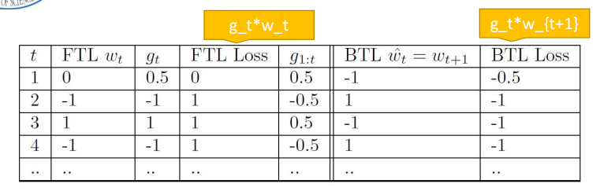

lecture 0
Alpha Go: 深度学习+强化学习+蒙特卡洛树查询
- 蒙特卡洛搜索树： 用于树遍历的具有PUCT功能的某些变体
- 残余卷积神经网络： 用于游戏评估和移动先验概率估计的政策和价值网络
- 强化学习： 用于通过自我游戏训练网络
深度学习vs在线学习
- 大多数深度学习模型可以在线学习
- 在线学习基于计算机实验
- 在线学习有更少的数学求导
- 深度学习更像CS&CE类型的调查
- 在线学习属于统计机器学习一类
- 在线学习是数学类多学科的，属于应用数学和运筹学
- 受EE领域的研究者喜爱
- 可以证明很多定理并发表出版
为什么讲这个学科
- 十分热门，在ECE主题中广泛应用
- 深度学习和在线学习都是十分热门的学科
课程介绍
- 在线学习对于天气预报、股市趋势预测和那种广告显示在web页面这些随后的预测问题十分在行
- 在线学习算法观察一个例子流并对每个元素进行预测
- 算法收到每个预测快速的反馈并使用反馈来提升随后预测的准确度
- 与统计机器学习相比，在线学习算法不会对他们观察到的数据做出随机假设，甚至可以处理恶意攻击者生成数据的情况。
- 最近有一系列关于在线学习算法的科学研究，主要是因为它们广泛适用于网络规模的预测问题
- 本课程将对最先进的在线学习算法进行严格的介绍，重点是算法设计和理论分析。
- 主题包括：凸分析背景，遗憾最小化，在线优化，专家问题，部分反馈的在线学习和探索/利用权衡（a.k.a.强盗问题）和一系列高级主题
先决条件
本课程假设基本概率论和线性代数的背景。 关键数学概念将在使用前进行审核，但预计会有一定程度的数学成熟度。 该课程是理论性的，不涉及编程（但研究工作需要编程）
- 凸优化理论初探
- 线性代数
- 概率论
- 一点信息论
- matlab
在线梯度下降
- 遵循正则化的领导者 遵循正则化领导者（FTRL）算法族在某种程度上是在线学习中最基本的算法。 我们将使用通用且非常强大的引理来介绍和分析算法的简单实例。还将介绍凸分析的一些必要背景。
- 在线梯度下降 在线梯度下降算法是随机梯度下降的近亲。 我们将对线性函数进行遗憾绑定分析，并展示相同的边界如何应用于自由到一般凸函数。可以立即为我们提供了逻辑回归和线性支持向量机的算法。
- 自适应坐标学习率 这种对梯度下降的简单修改可以在大型数据集上产生显着更好的性能。我们通过一维示例说明全局学习率的问题，然后扩展前一讲的分析，以便在使用自适应坐标学习率时提供更严格的界限。
计划主题
- 遵循近端正则化的领导者 我们表明，遵循正则化的领导者和在线梯度下降是密切相关的。 但是，他们的行为在某些重要方面有所不同。 我们展示了如何在FTRL上下文中更有效地实现用于产生稀疏模型的L1正则化（例如，Lasso算法）。
- 遗憾的替代概念 到目前为止，我们通过将其性能与固定的最佳后见比较器进行比较来分析算法。 然而，对于某些应用，其他遗憾概念更合适，例如，当世界的“真实”模型正在发生变化时。
- 镜像下降 镜像下降推广了在线梯度下降，并允许我们为许多其他问题开发算法。 我们考虑最好的专家问题，在每一轮我们必须从一组中选择一个“专家”，我们遵循这一轮的建议。
- 强盗算法 用于k武装强盗问题的算法通过部分反馈扩展了最佳专家问题。
- 在每一轮中，您只能了解通过跟随您选择的专家获得的奖励; 你无法直接了解其他专家是否会更好。
- 例如，考虑在网页上向用户展示广告 - 我们将广告建模为“专家”，如果我们不选择展示广告，则无法知道用户是否会点击广告。
- 高概率界限 到目前为止专家和强盗算法的大部分后悔限制只能保持预期; 算法使用随机化，如果我们运气不好，那么我们可以做的比我们应该的界限更糟糕。 但是，通过对算法的一些修改，我们可以设计出能够以高概率保证良好性能的算法。
- 随机匪徒 到目前为止，引入的强盗算法没有对专家/行动的回报做出统计假设。 假设数据集分布是独立的并且相同地分布在i.i.d. 但是，我们不知道确切的分布函数。 如果我们知道奖励遵循一些（未知）分布，我们能获得更好的界限吗？
- 对抗性强盗：数据集上的奖励分配可以任意改变
- 上下文强盗 基本强盗算法必须在没有任何附加上下文的帮助下选择一个动作。 然而，上下文强盗算法可以在每次做出决定时利用关于世界当前状态的附加信息。 例如，在网页上放置广告时，我们可能会根据网页内容做出不同的决定。
- 高级主题 高级主题可能包括对博弈论与在线学习之间关系的考察; 在线学习算法在批量机器学习问题中的应用; 组合结构的专家和强盗问题; 和选择性采样和标签效率。
lecture 1
介绍
在线预测可以被认为是一个玩家（也就是预测者，学习算法）和环境（也就是对手）之间的重复博弈。T表示游戏的轮数。 在每一轮$t(t = 1, …, T)$中，玩家和环境以下面的直观形式玩游戏
- 环境：选择问题实例
- 玩家：对此实例进行预测
- 环境：对此预测造成$loss \in R$。 （玩家更喜欢较小的损失。）。 将有关预测准确性的反馈发送给玩家。
- 玩家：学习并记录反馈
示例：在线二进制预测游戏
在线二进制预测具有许多应用，例如电子邮件垃圾邮件分类，其可能不适合随机模型。 在此应用程序中，玩家会观察电子邮件的某些功能并进行二进制预测，无论是垃圾邮件还是非垃圾邮件。 以下是详细信息：每轮$t = 1, …, T $
- 玩家观察一个由环境生成的实例的特征向量$x_t \in R^n $
- 玩家进行二进制预测$\widehat{y_t} \in \{+1, -1\} $
$ +1, -1$分别代表“垃圾邮件”和“非垃圾邮件” - 玩家观察反馈$y_t \in \{+1, -1\} $
- 产生损失$\ell_t = l_{\widehat{y_t} \neq y_t} $
几轮之后，累计损失是$\sum_{t = 1}^T\ell_t$。 直观地说，最终需要“小的”累积损失。
这里我们提出了二元预测游戏的等价定义。 对于$t = 1, …, T $，
- 玩家从假设类$H$中选择一个假设（也就是二元分类器）$h_t$。
$$ h_t: R^n \rightarrow \{+1, -1\} $$
该假设是从特征向量$x \in R^n$映射到二进制预测集（例如$\{+1, -1\}$）的函数，在回合$t$中，$h_t$的选择可以基于$t$之前记录的所有信息。 - 环境选择$\{x_t, y_t\}$。
- 玩家遭受损失$\ell_t = l_{h(x_t) \neq y_t} $
- 让我们首先定义二元线性预测器和铰链损失函数。假设$h_w: R^n \rightarrow \{+1, -1\}$
$$ h_w(x) = sign(w \cdot x) = \left\{\begin{array}{ll}
+1 & if w \cdot x > 0 \\
-1 & if w \cdot x < 0
\end{array}\right. $$
称为二元线性预测器。 该假设的唯一参数是向量$w \in R^n$。 - 几何上，所有垂直于$w$的向量（即零内积）形成一个超平面$\{x: w \cdot x = 0\} $，如图1所示。数据可能属于半空间$\{x: w \cdot x > 0\}$和$\{x: w \cdot x < 0\}$之一。$ | w \cdot x |$可以解释为预测置信度。
示例：具有铰链损耗的在线二元线性预测器
- 假设类$H$
$$ H = \{h_w(x): w \in R^n, ||w||_2 \leq 1\} $$
是二元线性预测变量的类。 - 已经提出了许多损失函数来对预测误差$\ell_t = l_{\widehat{y_t} \neq y_t}$进行惩罚仅仅是误差指示，或称为零丢失。铰链损失定义为
$$ l(w;(x_t, y_t)) = max\{0, 1 - y_tw \cdot x_t\} $$ - 如图2所示，铰链损失函数对错误预测（$ y_tw \cdot x_t < 0 $）和具有小置信度（$ 0 \leq y_tw \cdot x_t < 1 $）的正确预测施加惩罚。
- 具有铰链损耗的二元线性预测游戏可以如下呈现。对于$t = 1, …, T $
- 玩家选择$w_t \in W $，其中$W = \{w \in R^n: ||w||_2 \leq 1\} $，$ R^n$中的单位球
- 环境选择$(x_t, y_t)$。
- 玩家输了损失$\ell_t(w_t; (x_t, y_t)) = max\{0, 1 - y_tw \cdot x_t \}$。 （$ x_t, y_t$被视为$\ell_t$的参数。）
- 玩家收到反馈$(x_t, y_t)$。
- 此游戏设置可以概括为在线凸优化（OCO），将在下一节中讨论。
在线凸优化(OCO)
- 对于$t = 1, …, T $
- 玩家选择$w_t \in W$，其中$W$是$R^n$中的凸集。
- 环境选择凸损函数$f_t: W \rightarrow R $。
- 玩家输了损失$\ell_t = f_t(w_t) = f_t(w_t; (x_t, y_t))$。
- 玩家收到反馈$f_t $。
- 假设：环境是对$w_1, …, w_T$是遗忘的（未察觉;不知道……），但可以任意定义$f_1, …, f_T$（可能是恶意的，即使完全了解玩家的算法，并具有无穷大的计算能力）
- 然后，最后，累积损失$\sum_{t = 1}^T \ell_t$可以任意大。 如何评估预测性能？ 什么是性能的良好基准？
- 一个好的选择是事后最佳固定（或静态）假设的累积损失，
$$ \min\limits_{w \in W} \sum_{t = 1}^{T}f_t(w) $$ - 要选择这个最好的固定假设，我们需要知道未来，即收集所有$f_1, …, f_T $，然后运行离线算法。
- 事后确定假设的实际累积损失与最小累积损失之间的差异被定义为遗憾，
$$ R(T) = \sum_{t = 1}^Tf_t(w_t) - \min\limits_{w \in W} \sum_{t = 1}^T f_t(w) $$- 如果后悔线性增长，$ R(T) = \Omega(T) $，玩家不会学习。
- 如果后悔亚线性增长，$ R(T) = o(T) $，玩家正在学习并且其预测准确性正在提高。
- 随着T进入无穷大，每轮的遗憾变为零
$$ \frac{1}{T}(\min\limits_{w \in W} \sum_{t = 1}^T f_t(w)) \rightarrow 0, T \rightarrow \infty $$
-$R(T) = O(\sqrt{T}) $。
在线学习与统计学习的比较
| 在线学习（OL） | 统计学习（SL） | |
|---|---|---|
| 相同 | 两者都定义了假设空间/类预测器（在在线学习的游戏的每一轮中，而在统计学习的训练过程中） | |
| 两者都定义了损失函数来评估预测性能，并且优选小损失 | ||
| 实例和标签 | ||
| 不同 | 在每轮比赛中学习，训练和测试之间没有区别 | 首先训练一个模型，然后进行测试 |
| 对手案 | 统计假设 | |
lecture 2
回顾在线凸优化算法
- 对于$t = 1, 2, …, T $
- 玩家选择$w_t $
- 对手选择$f_t$（和玩家的决策同时）
- 玩家的损失$f_t(w_t)$计算
- 玩家观察$f_t $
真实世界的例子 - 谷歌搜索
概论
在课堂上，我们探索了一个真实的世界环境
- 用户输入查询“烹饪的乐趣”。
- Google的广告服务器回复了一系列要向用户展示的广告。
- 用户可能会点击其中一个广告。
然后我们可能会问以下问题。
Google如何决定向用户展示哪些广告？
要确定此设置的在线学习方面，我们首先会探讨广告服务器运行的一些流程。 广告服务器执行以下过程：
- 匹配关键字上的广告。 例如，关键字“烹饪”可以从用户的查询中提取，并且可以与与烹饪相关的广告匹配。
- 对于每个广告，我们计算要素$x \in R^n$，然后查询预测模型以估计广告被点击的概率。 请注意，这意味着我们会比实际展示的广告更多地匹配和预测广告。
- 运行拍卖，其考虑从上一步骤计算的点击概率，以及广告的货币价值。
- 选择要显示的广告。
我们专注于学习问题，我们正在尝试预测特定用户点击广告的可能性。
示例模型
- 在课堂上，我们假设了一个线性模型$w \in R^n$。
- 鉴于权重，我们可能会决定做出这样的预测：
$$ \hat{p} = w \cdot x $$ - 但是，由于我们试图预测概率，我们希望将预测标准化为0到1之间。
- 也就是说，我们需要一个函数$f(x)$，使得$f: R \rightarrow [0, 1]$。
- 我们也希望这个函数递增，因此更高的$x$将对应更高的概率。 实现此目的的常见函数是sigmoid函数$\sigma(x) = \frac{1}{1 + e^{-x}}$。
- 因此，我们预测概率如下：
- 请注意，这正是逻辑回归模型计算输入示例的类概率的方式。
- 为了学习模型，我们有一个接受$(x，y)$对的训练系统，其中$x$是广告的特征向量，$y$是相应的标签，在这种情况下表示用户是否点击了 广告
- 仍然使用逻辑回归模型，如果我们使用在线梯度下降来优化损失函数，训练过程将如此
- （我们使用1来表示点击广告，否则为0，以便在使用在线梯度下降进行逻辑回归时进行数学运算。）
| 训练过程 - 逻辑回归的SGD |
|---|
| 对于每一个$(x, y) $， $\hat{p} = \sigma(w_t \cdot x)$ $g = (\hat{p} - y)x$ $w_{t + 1} \leftarrow w_t - \eta g$ |
- 请注意，在实际设置中，我们必须使用从训练过程中获得的新权重向量更新广告服务器使用的$w$。
问题和挑战
在实际设置中，$ n $，特征向量的维度可以是数十亿的数量级。 除此之外，在线设置也带来了一些挑战：
- 只需编写模型$w$就会占用太多空间。而且，我们想在那里寻找最好的模型
- 通过做一个正常的点积来天真地计算预测将太慢，特别是考虑到我们想要以数百毫秒的顺序向用户提供反馈的约束。
- 幸运的是，即使$w$很密集，特征向量$x$通常也很稀疏。如果我们使用一袋单词表示，则尤其如此。
- 然后，计算$w \cdot x$将仅涉及与$x$中的非零元素的数量成比例的多个操作，而不是$n$。
- 即使我们在$(x，y)$示例中表现良好，我们也必须记住，这些示例是从实际显示的广告中获得的。 因此，可能会出现一些未示出的广告实际上是好的。 与此相关的未来主题是探索。
映射回OCO
- 回到OCO公式，我们看到$w_t$是训练过程输出的权重向量。
- 由于我们选择使用逻辑回归作为模型，我们希望我们的损失函数与条件似然相关。
- 课堂上选择的具体形式是$f_t = log(1 + exp(-y_t(w \cdot x_t)))$。
- 课堂上评论说，这种损失功能可以看作是铰链损失的软版本。下图显示了这一点。
- 但是，也有一些观点认为OCO没有对给定示例的某些方面进行建模。例如，在玩家实际观察$f_t$之前有一段延迟，因为此信息仅在用户做出点击决定后才可用。
关于使用遗憾分析的评论
- 要审核，
$$ Regret = \sum_{t}f_t(w_t) - \min\limits_{w \in W} \sum_{t} f_t(w) $$ - 在比较两种型号A和B时，我们注意到我们可以取消右侧的常数项：
$$ Regret(A) - Regret(B) = \sum_{t}f_t(A_t) - \sum_{t} f_t(B_t) = Loss(A) - Loss(B) $$ - 当使用遗憾作为优化的度量标准时，如果在对模型进行更改时$W$已经改变，我们必须要小心; 更高的遗憾可能误导我们认为模型比另一模型更糟，但这不一定是真的。
跟随领导者（FTL）算法
- 我们探索在OCO框架中应用的第一个新算法是Follow-The-Leader，它被描述为最简单，最自然，最不实用的在线学习算法。 本节的大部分内容改编自Shai Shalev-Shwartz [1]的调查。
| Follow-The-Leader |
|---|
| $w_1$是任意设定的 对于$t = 1, 2, …, T$ $w_t = \arg\min\limits_{w \in W} \sum_{s = 1}^{t - 1}f_s(w)$ |
- 查看算法有两种方法。
- 我们正在围绕权重向量进行游戏，如果游戏在第$t - 1$轮停止，则最小化后悔。
- 我们将所有看到的例子用作批处理机器学习问题，并求解最佳权重向量。
- 我们注意到，运行此算法的时间越长，算法越慢，因为批处理问题变得越来越大（不切实际）。
- 我们现在证明我们的第一个遗憾。 请注意，遗憾也可以表示为相对于所选择的向量，而不是仅仅事后与最佳模型进行比较。 在下面的引理中，$Regret(u)$表示对向量$u$的遗憾。
- 引理1.由FTL扮演的点$w_1, w_2, …, w_T$满足
$$ \forall u \in W, Regret(u) \leq \sum\nolimits_{t = 1}^{T} (f_t(w_t) - f_t(w_{t + 1})) $$
证明
- 证明。 我们首先重述引理。替换$Regret(u)$的定义给出了以下等价声明：
$$ \sum\nolimits_{t = 1}^{T}(f_t(w_t) - f_t(u)) \leq \sum\nolimits_{t = 1}^{T}(f_t(w_t) - f_t(w_{t + 1})) $$ - 减少到
$$ \sum_{t = 1}^{T}f_t(w_{t + 1}) \leq \sum_{t = 1}^{T}f_t(u) $$ - 在课堂上，不等式左侧的表达式被称为Be-The-Leader（BTL）算法的累积损失，该算法通过查看下一个示例而作弊。 该术语由Kalai等人提出。[2]
- 我们现在用感应来证明
$$ \forall u \in W, \sum_{t = 1}^{T}f_t(w_{t + 1}) \leq \sum_{t = 1}^{T}f_t(u) $$ - 基本情况。 对于任何$u$，$T = 1. f_1(w_2) \leq f_1(u)$都是真的，因为$w_2$使$f_1$最小化。回想起那个
$$ w_2 = \arg\min\limits_{w \in W} \sum\nolimits_{s = 1}^{2 - 1}f_s(w) = \arg\min\limits_{w \in W} f_1(w) $$ - 归纳假设。我们假设上述陈述适用于时间$T - 1$，即
$$ \forall u \in W, \sum_{t = 1}^{T - 1}f_t(w_{t + 1}) \leq \sum_{t = 1}^{T - 1}f_t(u) $$ - 归纳步骤。从上面的I.H.中，我们通过以下序列的等价不等式表明该陈述适用于时间T来完成归纳步骤：
$$ \begin{aligned}
\sum_{t = 1}^{T - 1}f_t(w_{t + 1}) & \leq \sum_{t = 1}^{T - 1}f_t(u) \\
\sum_{t = 1}^{T - 1}f_t(w_{t + 1}) + f_T(w_{t + 1}) & \leq \sum_{t = 1}^{T - 1}f_t(u) + f_T(w_{t + 1}) \\
\sum_{t = 1}^{T}f_t(w_{t + 1}) & \leq \sum_{t = 1}^{T - 1}f_t(u) + f_T(w_{t + 1})
\end{aligned} $$ - 由于上述陈述适用于所有$u$，我们可以采用$u = w_{T + 1}$，这给了我们
$$ \sum_{t = 1}^{T}f_t(w_{t + 1}) \leq \sum_{t = 1}^{T}f_t(w_{T + 1}) $$ - 我们可以将不等式右侧的项视为向量的函数，$f(v) = \sum_{t = 1}^{T}f_t(v)$。在这种情况下，参数是$v = w_{T + 1}$。我们注意到$w_{T + 1}$恰好是$f(v)$的最小化。因此，对于所有$u$，$\sum_{t = 1}^{T}f_t(w_{T + 1}) \leq \sum_{t = 1}^{T}f_t(u)$。有了这个最终的不平等，我们就结束了归纳证明。
例子
- 我们现在探索一个FTL表现不佳的例子。
- 示例1 假设$W \in [-1, 1], f_t(w) = g_t w$，其中$g_t \in [-1, 1]$由对手选择，并且玩家选择$w_t$。 我们还将$\sum_{s = 1}^{t} g_s$缩写为$g_{1 : t}$
- 下面我们展示一个玩家与FTL策略之间的任意选择$w_1 = 0$的游戏，以及一个想要让玩家产生损失的对手（请注意，对手也知道FTL策略是确定性的）。
- 我们还在右侧显示BTL策略进行比较。 我们考虑FTL策略在此设置下将采取的措施，其中所使用的点由下式给出
$$ \begin{aligned}
w_t & = \arg\min\limits_{w \in [-1, 1]} \sum_{s = 1}^{t - 1}f_s(w) \\
& = \arg\min\limits_{w \in [-1, 1]} \sum_{s = 1}^{t - 1} g_s w \\
& = \arg\min\limits_{w \in [-1, 1]} g_{1 : t - 1} w
\end{aligned} $$ - 因此，FTL策略总是选择与$g_{1 : t - 1}$相反的符号，幅度为1。
- FTL的遗憾是$(T - 1) - (-0.5) \approx T$，这很糟糕，因为我们希望遗憾是$o(T)$。
- 注意到BTL的累积损失是$\approx T$，使用我们刚刚证明的先前界限，我们得到了
$$ \forall u \in W, Regret(u) \leq (T - 0.5) - (-T + 0.5) = 2T - 1 $$ - 上限高于$T$，这使得这一遗憾成为弱势。
- 在本节课结束时，暗示通过跟随规则化领导算法，我们可以通过添加正则项来提高FTL算法的稳定性。 但这是为下一节课！
- 参考文献
[1] Shai Shalev-Shwartz，“在线学习和在线凸优化”，机器学习的基础和趋势，2012。
[2] Adam Kalai，Santosh Vempala，“在线决策问题的有效算法”，计算机与系统科学期刊，2005年。